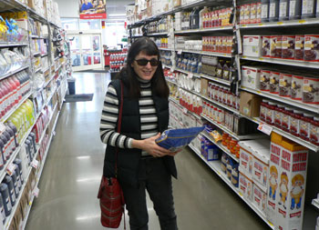
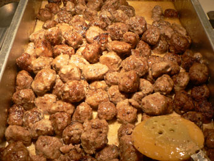

First party post: meatballs
Mom and Nathan and the rest of the family and I have spent the last several days in a party-preparation hysteria, and all of the pre-party posts I meant to put up never happened because of so much shopping and cooking and decorating. Mom got the idea to have a Christmas party a few weeks ago, and before she knew it, over a hundred people said they would come (and they all came). When Nathan and I flew in on Wednesday, it was off to work immediately. Here I am studying recipes in the new kitchen.
After collecting recipes online and from cookbooks, Mom and I hit the streets. We went to Whole Foods, Trader Joe’s, the fabulous Giant Eagle Market District, the East End Food Coop, the new wine store in East Liberty, and a weird restaurant supply place in Monroeville called GFS Marketplace, where we kept a low profile:

To avoid an unreadably long post, we’re splitting up the work by posting on individual hors d’oeuvre that stood out. I’m starting with the Finnish meatballs that I read about on Wednesday Chef recently.

These balls are similar to the Swedish meatballs I grew up with, but they have cheese in them! I doubled the recipe (using four pounds of meat in total), but I could have tripled it. These things went fast. Every time I sent out a platter full of them, it came back five minutes later sad, greasy, and empty.
I made these meatballs in stages, because I knew I wouldn’t have enough time to do it at the last minute. I made the meat mixture the night before the party, and Nathan and I rolled out the balls the following morning. The only complication with this was that the balls seemed to absorb quite a bit of the flour, and they started sticking together in the hot kitchen as I fried them. But this was easy to solve (putting the meat back in the fridge for twenty minutes), and they didn’t all fall apart while simmering, as I was afraid they would. Thanks, Wednesday, for another winner.
Comments
Those meatballs sounded so good! Between you and Luisa recommending them they couldn’t come more highly recommended. I’m just waiting for the right occasion to make them.
Wow – four pounds of meat! I’m impressed. And glad you liked them. They’re really just perfect for a party.
I am still slightly mift that you didn’t save me a single freakin meatball! Even the pan drippings looked amazingly delicious.
Add a comment